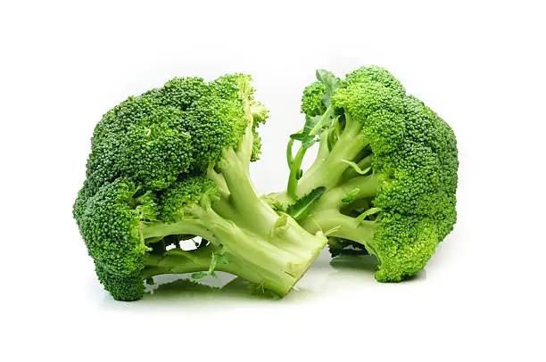
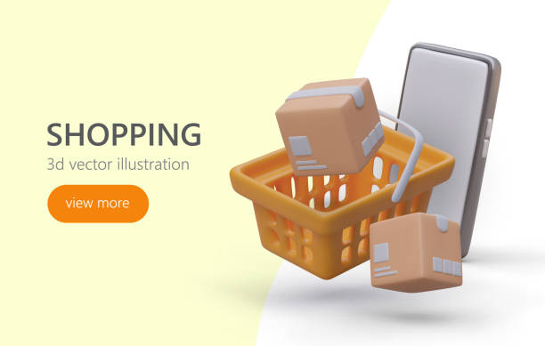
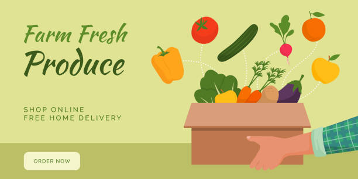

Services We Provide
Fresh Produce
We offer a variety of fresh fruits and vegetables, sourced directly from local farms.
Online Ordering
Order groceries from the comfort of your home and have them delivered directly to your doorstep.
Same-Day Delivery
Need it fast? We provide same-day delivery for orders placed before noon.
Specialty Products
We carry a wide selection of specialty items, including gluten-free, organic, and international foods.
In-Store Pickup
Order online and pick up your groceries in-store to avoid waiting in line.
Book now for quqlity services
Loyalty Program
Earn points on every purchase and redeem them for discounts or free products!